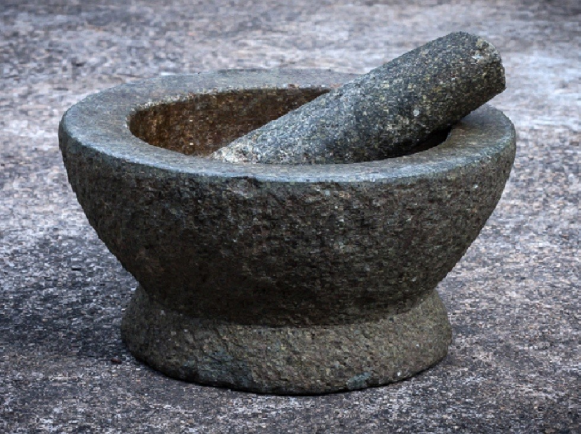
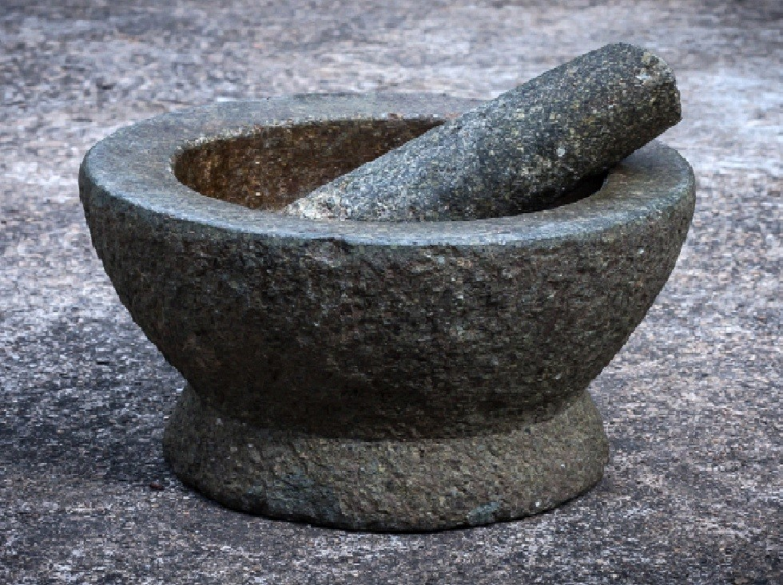

Ayurvedic medicine
 

Ayurvedic medicine (also called Ayurveda) is one of the world's oldest medical systems.. It originated in India more than 3,000 years ago and remains one of the country's traditional health care systems. Its concepts about health and disease promote the use of herbal compounds, special diets, and other unique health practices.
Key Points
Is Ayurvedic medicine safe?
Ayurvedic medicine uses a variety of products and practices. Some of these products-which may contain herbs, minerals, or metals-may be harmful, particularly if used improperly or without the direction of a trained practitioner. For example, some herbs can cause side effects or interact with conventional medicines. Also, ingesting some metals, such as lead, can be poisonous.
Studies have examined Ayurvedic medicine, including herbal products, for specific conditions. However, there aren't enough well-controlled clinical trials and systematic research reviews-the gold standard for Western medical research-to prove that the approaches are beneficial.
Keep in MindTell all your health care providers about any complementary and integrative health approaches you use. Give them a full picture of what you do to manage your health. This will help ensure coordinated and safe care.
What Is Ayurveda?
The term "Ayurveda" combines the Sanskrit words ayur (life) and veda (science or knowledge). Ayurvedic medicine, as practiced in India, is one of the oldest systems of medicine in the world. Many Ayurvedic practices predate written records and were handed down by word of mouth. Three ancient books known as the Great Trilogy were written in Sanskrit more than 2,000 years ago and are considered the main texts on Ayurvedic medicine—CarakaSamhita, SushrutaSamhita, and AstangaHridaya. Key concepts of Ayurvedic medicine include universal interconnectedness (among people, their health, and the universe), the body’s constitution (prakriti), and life forces (dosha), which are often compared to the biologic humors of the ancient Greek system. Using these concepts, Ayurvedicphysicians prescribe individualized treatments, including compounds of herbs or proprietary ingredients, and diet, exercise, and lifestyle recommendations. The majority of India’s population uses Ayurvedic medicine exclusively or combined with conventional Western medicine, and it’s practiced in varying forms in Southeast Asia.
What the Science Says About the Safety and Side Effects of Ayurvedic MedicineAyurvedic medicine uses a variety of products and practices. Ayurvedic products are made either of herbs only or a combination of herbs, metals, minerals, or other materials in an Ayurvedic practice called rasa shastra. Some of these products may be harmful if used improperly or without the direction of a trained practitioner.